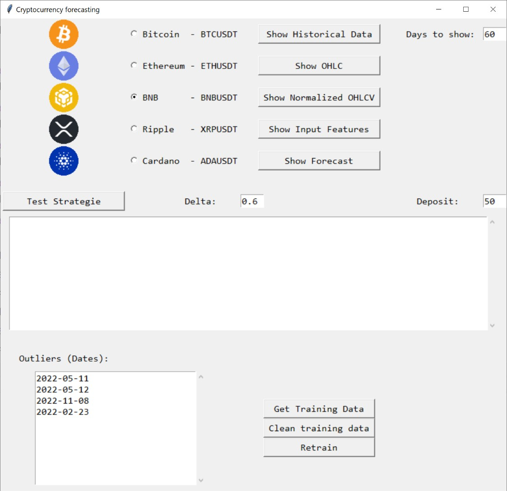
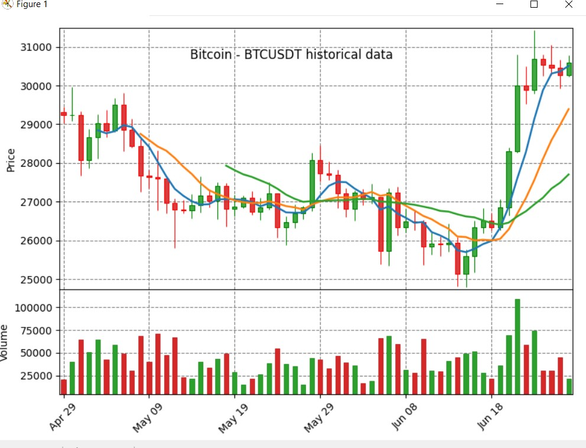
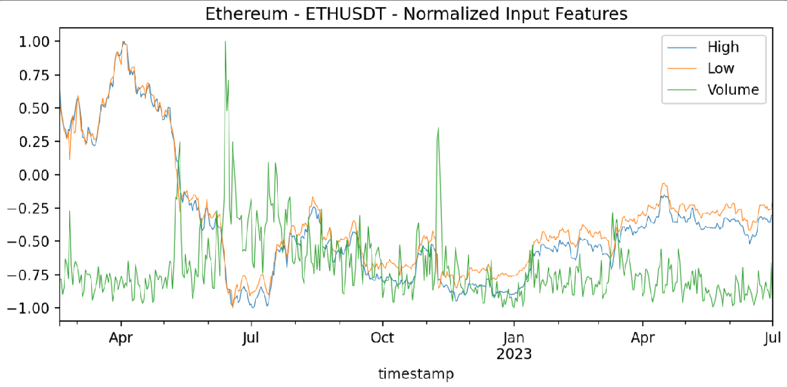
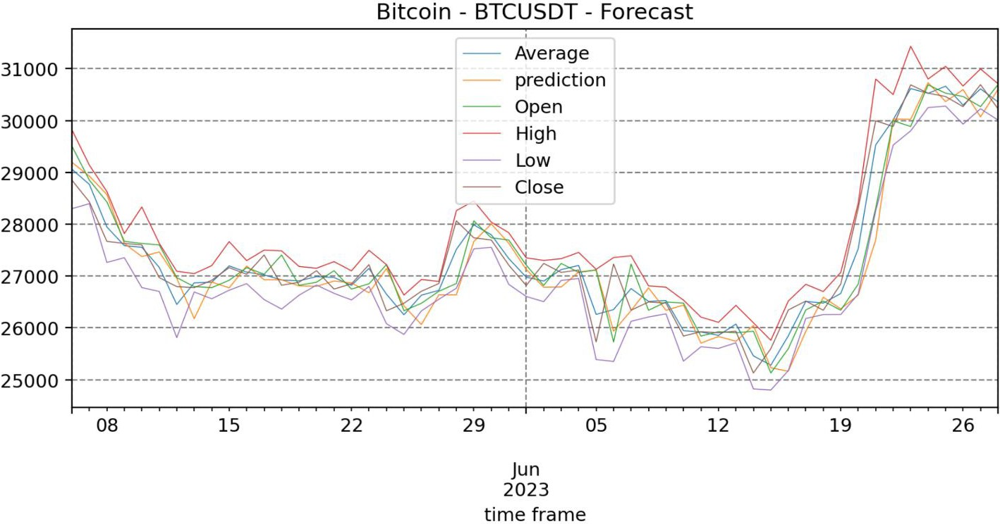
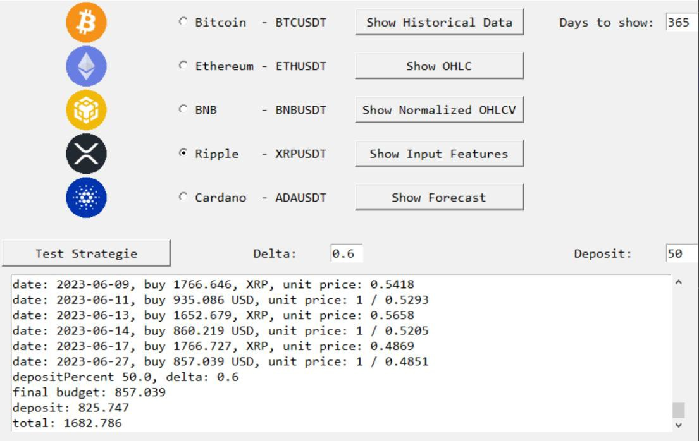
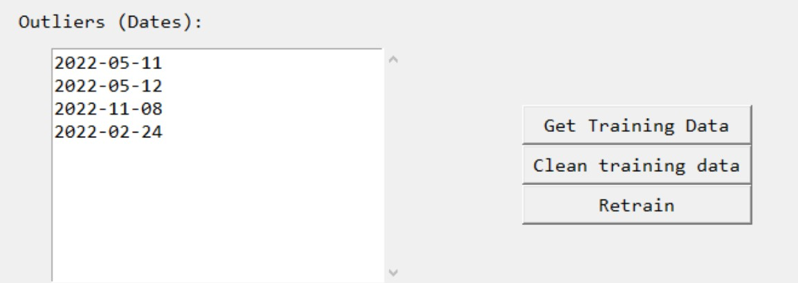

Retail crypto investors
Need understandable forecasts, risk warnings, and simple strategy simulation before making decisions.
Product case study
A FinTech AI product case study based on a dissertation project and a related IEEE publication on cryptocurrency forecasting with deep neural networks. The product helps users analyze historical market data, generate AI-assisted forecasts, test trading strategies, and understand risk before taking action.
Overview
This case study translates a cryptocurrency forecasting application into a product-oriented concept. The original prototype was developed in Python using Keras and historical cryptocurrency data collected from Binance. It supports data visualization, data cleaning, model retraining, forecasting, and strategy testing.
The product framing is deliberately risk-aware: it is not designed to promise profitable trading or replace financial expertise. It is designed as a decision-support and simulation tool that helps users understand possible market movements, test assumptions, and evaluate uncertainty before making decisions.
My role
My contribution included research on neural-network-based cryptocurrency forecasting, data pipeline design, Python application development, Binance data integration, preprocessing and outlier handling, model training with Keras, forecast visualization, and strategy simulation.
In this portfolio version, I translated the technical prototype into a product case study with clear users, product scope, success metrics, AI risks, roadmap, and responsible positioning.
Problem
Cryptocurrency markets are volatile, fast-moving, and strongly influenced by unpredictable events. Users often rely on fragmented tools, raw charts, social media signals, or overly confident prediction dashboards.
A major product challenge is not only generating forecasts, but communicating their uncertainty responsibly. An AI system in this domain must help users explore scenarios without encouraging blind trust in predictions.
This creates an opportunity for a forecasting product that combines market data, transparent model outputs, strategy simulation, retraining workflows, and risk-aware communication.
Users
Need understandable forecasts, risk warnings, and simple strategy simulation before making decisions.
Need fast access to updated market data, trend signals, and backtesting support.
Need reproducible forecasting workflows, visual diagnostics, and model performance metrics.
Need an educational tool for exploring deep learning, time-series forecasting, and financial uncertainty.
Personas
These personas keep the product focused on responsible decision support rather than prediction for its own sake.
Wants to understand whether a cryptocurrency may move upward or downward, but does not have advanced machine learning or quantitative finance expertise.
Wants to inspect data, compare model behavior, evaluate error metrics, and test how prediction quality affects strategy outcomes.
Vision
The product vision is to help users analyze cryptocurrency price behavior, generate short-term AI-assisted forecasts, and test simple strategies in a controlled simulation environment.
The product should communicate uncertainty clearly. It should support decision-making, learning, and scenario exploration, while avoiding claims that the AI can reliably predict or guarantee financial outcomes.
User journey
The user journey connects data acquisition, preprocessing, forecasting, and strategy simulation into one coherent workflow.
The user selects BTC, ETH, BNB, XRP, ADA, or another supported asset.
The system collects historical OHLCV market data from Binance.
The user reviews and removes outliers that may distort model training.
The model generates price forecasts and displays them against historical values.
The user tests strategy parameters in a backtesting-style simulation.
The product highlights uncertainty, model limits, and strategy sensitivity.
Core capabilities
Product role: retrieves and prepares historical cryptocurrency data.
User value: fresh data and reproducible analysis.
Product role: uses neural networks to learn temporal patterns from historical data.
User value: AI-assisted forecast exploration.
Product role: tests how simple buy/sell rules would behave on historical predictions.
User value: safer experimentation before real decisions.
Product role: displays OHLC, OHLCV, normalized inputs, forecasts, and strategy logs.
User value: clearer interpretation of model behavior.
Extended capabilities
The prototype can evolve into a broader risk-aware crypto analytics platform.
Compare LSTM, GRU, RNN, ARIMA, regression models, and hybrid CNN-LSTM architectures to identify which models are useful under different market conditions.
Add risk indicators that prevent users from overtrusting model outputs during highly volatile periods.
Extend the simulator from single-asset strategies to portfolio-level analysis.
Research foundation
The technical foundation of the prototype is time-series forecasting using deep neural networks. The dissertation application uses historical OHLCV data, preprocessing, normalization, and recurrent neural-network forecasting.
The prototype was implemented as a modular Python application with components for Binance data extraction, user interface, forecasting data preparation, result visualization, model training, and strategy testing.
The related IEEE publication extends this research direction by studying deep neural networks in the volatile cryptocurrency forecasting context.
MVP
The MVP focuses on validating whether users can select a crypto asset, fetch historical data, generate forecasts, visualize model behavior, and test simple strategies without treating the output as financial advice.
Prioritization
| Feature | Priority | Reason |
|---|---|---|
| Asset selection | Must | Required for user workflow. |
| Historical data retrieval | Must | Core input for forecasting and visualization. |
| Data cleaning and normalization | Must | Improves model reliability and input quality. |
| Forecast visualization | Must | Core product value and interpretability layer. |
| Strategy simulation | Should | Transforms forecasts into testable decision-support scenarios. |
| Model retraining | Should | Important when market behavior changes. |
| Multi-model comparison | Could | Useful for future research and product credibility. |
| Portfolio optimization | Could | Valuable later, but too complex for the first product version. |
| Automatic real-money trading | Won’t for now | High financial and regulatory risk. |
Roadmap
Asset selection, market data retrieval, visualization, LSTM forecasting, and basic strategy simulation.
Forecast error metrics, directional accuracy, confidence intervals, uncertainty warnings, and model diagnostics.
Compare LSTM, GRU, ARIMA, regression models, and hybrid architectures across assets and horizons.
Portfolio simulation, drawdown analysis, strategy sensitivity, and risk-adjusted performance indicators.
Web dashboard, account-safe data handling, audit logs, security, and compliance-aware product positioning.
Metrics
Activation rate, completed forecasts, strategy simulations completed, repeat usage, time to insight, export rate.
MAE, RMSE, MAPE, directional accuracy, forecast drift, performance by asset and time window.
Overconfidence rate, forecast error during high volatility, maximum drawdown in simulated strategies, false signal rate.
Data freshness, API failures, retraining time, model loading time, interface responsiveness.
Forecast quality is only one part of product value. In a volatile market, the most important product outcome is not “predicting the future,” but helping users test assumptions, understand uncertainty, and avoid overconfident decisions.
Evidence
The original prototype included a working interface, Binance data collection, visual analysis, normalized input features, forecasting charts, model retraining, and strategy simulation.






Risk management
| Risk | Product impact | Mitigation |
|---|---|---|
| Overtrust in predictions | Users may treat forecasts as guaranteed outcomes. | Clear disclaimer, uncertainty display, no “guaranteed profit” language. |
| Market regime shift | Model trained on past patterns may fail under new conditions. | Retraining workflow, drift monitoring, recent-window evaluation. |
| High volatility | Small prediction errors can cause large financial consequences. | Risk warnings, volatility indicators, strategy sensitivity testing. |
| Data quality problems | Outliers or missing data may distort training and forecasts. | Data cleaning, outlier review, API validation, data freshness checks. |
| Regulatory and ethical risk | Product may be misunderstood as investment advice. | Educational positioning, simulation-only MVP, no personal financial recommendations. |
| Security risk | API keys or trading permissions could expose user assets. | No trading permissions in MVP, secure key handling, read-only market data access. |
Related publication
This case study is connected to a related publication on deep neural networks for cryptocurrency forecasting.
IEEE ICE/ITMC 2025
Related publication on deep neural networks and cryptocurrency forecasting, extending the dissertation direction into a peer-reviewed research context.
Learnings
This case study shows that AI product value in financial forecasting depends on more than prediction accuracy. The product must balance model performance, interpretability, risk communication, data freshness, security, and user responsibility.
The most important product trade-off is between helpful prediction and dangerous overconfidence. A responsible AI product in this domain should help users explore possibilities and test strategies, not create the illusion that the future is knowable.
Another important lesson is that retraining and monitoring are product requirements, not technical extras. In volatile markets, a model that was useful yesterday may become unreliable when market conditions change.